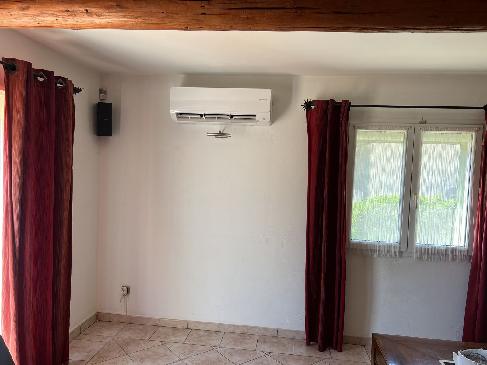

Ce qu'on remplace vraiment
Une clim réversible, c'est une pompe à chaleur air-air : elle prend la chaleur de l'air extérieur et la souffle dans vos pièces. Elle remplace très bien les radiateurs du séjour et des chambres, les pièces où l'on passe le plus de temps.
- Le séjour en priorité : c'est la pièce qui chauffe le plus d'heures, donc celle où l'économie est la plus forte.
- Les chambres ensuite, avec une unité par chambre : une seule clim dans le couloir ne chauffe pas des chambres portes fermées.
- La salle de bain garde son sèche-serviettes : on n'y met pas de clim.
- Vos radiateurs peuvent rester en appoint les quelques jours très froids, si vous le souhaitez.
Les prix posés selon la maison
Prix TTC « à partir de » pour une pose standard à Salon-de-Provence et alentours, matériel, pose et mise en service compris :
| Ce que vous chauffez | Solution | Prix posé |
|---|---|---|
| Un séjour jusqu'à ~35 m²Appartement, petite maison | Monosplit 3,5 kW | dès 1 361 € |
| Séjour + 1 chambre | Bisplit (1 groupe, 2 unités) | dès 3 124 € |
| Séjour + 2 chambres | Trisplit | dès 4 644 € |
| Séjour + 3 chambresMaison 4 pièces | Quadrisplit | dès 6 742 € |
| Toute la maison, sans unité visible | Gainable (combles) | dès 6 530 € |
Un supplément éventuel (goulotte décorative, ligne électrique dédiée, support sur toiture) est vu sur place et écrit dans le devis avant tout engagement. Pour votre cas précis, le configurateur de prix donne le prix posé en direct.
Ce que ça change sur la facture
Un radiateur électrique rend 1 kWh de chaleur pour 1 kWh payé. Une clim réversible récente en rend 3 à 4. Exemple pour une maison qui a besoin de 9 000 kWh de chaleur sur l'hiver, avec une électricité à 0,25 € le kWh (votre prix dépend de votre contrat) :
| Chauffage | Électricité consommée | Coût sur l'hiver |
|---|---|---|
| Radiateurs électriques | 9 000 kWh | 2 250 € |
| Clim réversibleSCOP 3,5 | environ 2 570 kWh | environ 640 € |
Dans cet exemple, l'écart est d'environ 1 600 € par hiver : un trisplit se rembourse en trois hivers environ. C'est un calcul théorique. Une maison bien isolée consomme moins, donc l'économie est plus faible et le remboursement plus long. Votre consommation de chauffage figure sur votre facture d'électricité : c'est le bon point de départ. Le détail du calcul est dans le comparatif clim réversible ou radiateur électrique.
Les pièges à éviter
- Prendre trop petit : pour chauffer, on dimensionne selon l'isolation et l'exposition au mistral. Un dernier étage ou une maison ancienne demande la puissance au-dessus. Le calcul de puissance donne une première idée.
- Une seule grosse unité pour toute la maison : elle chauffe la pièce où elle est, pas les chambres fermées.
- Oublier le groupe extérieur : bruit pour les voisins, accord du syndic en copropriété, parfois une déclaration en mairie. Je vous dis quoi vérifier lors de la visite.
- Compter sur les aides : les clims air-air ne sont en général pas éligibles à MaPrimeRénov'. Méfiez-vous des prix « après aides » trop beaux.
Par où commencer
Commencez par le séjour : c'est là que l'économie est la plus rapide. Si vous comptez équiper les chambres plus tard, dites-le dès la visite : on choisit alors entre un groupe multisplit prévu pour la suite ou un monosplit par zone. Voir les prix de l'installation de climatisation à Salon-de-Provence, ou appelez le 06 51 10 64 35 pour un premier avis.